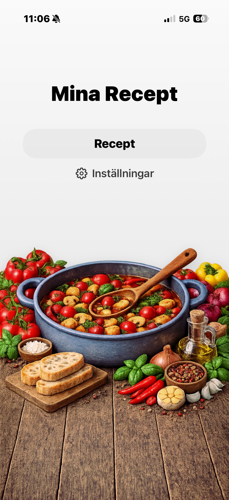

Skapa recept
Skriv in ingredienser, instruktioner och portioner på ett tydligt sätt.
Skapa, spara och organisera dina favoritrecept på ett enkelt och stilrent sätt. Ha allt samlat på ett ställe, alltid nära till hands. Dela enkelt recept med familj och vänner.

Skriv in ingredienser, instruktioner och portioner på ett tydligt sätt.
Samla dina bästa recept i en egen digital receptsamling.
Ren design som gör att recepten är lätta att läsa medan du lagar mat.
Mina Recept hjälper dig att samla, organisera och använda dina favoritrecept på ett enkelt och tydligt sätt. Här är några exempel på hur appen fungerar.

Justera appen efter dina behov och ha dina recept nära till hands.
Snart tillgänglig på App Store.
Kommer snart till App Store